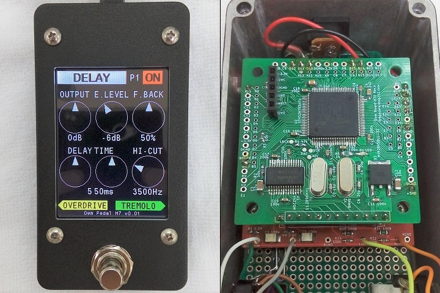
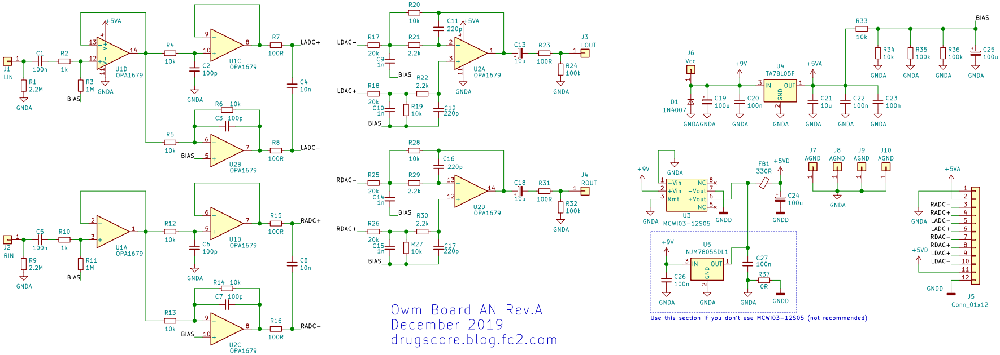
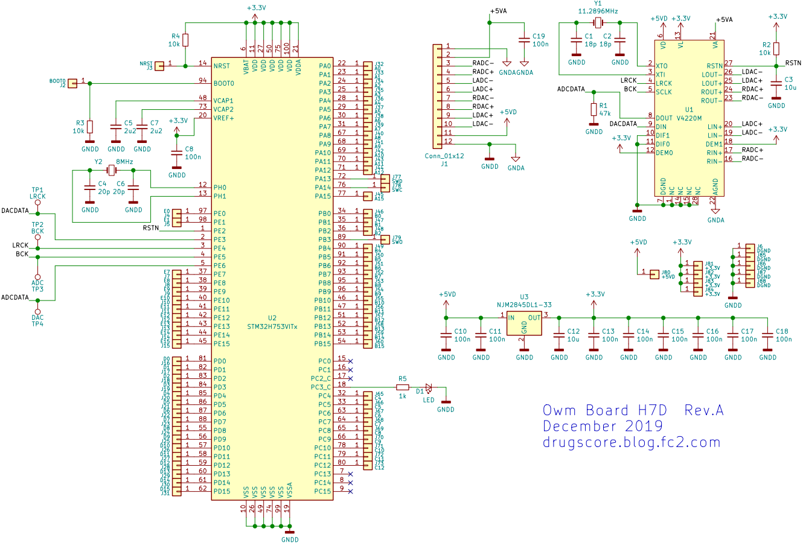
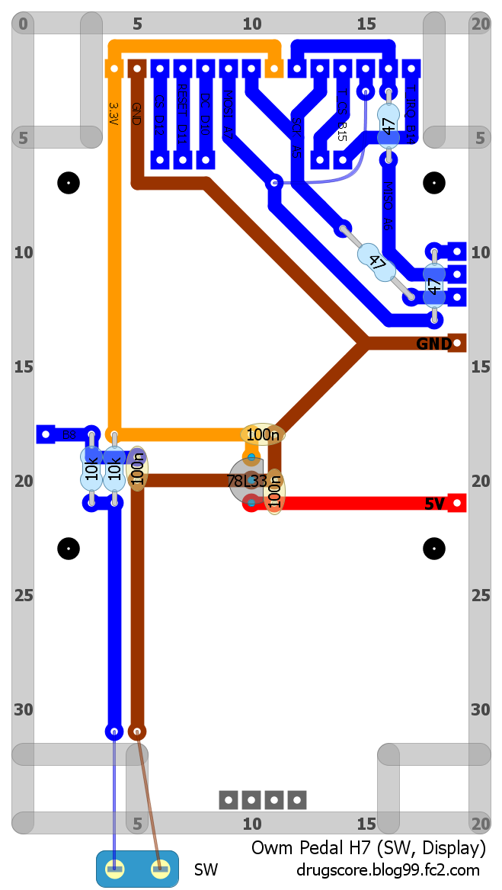
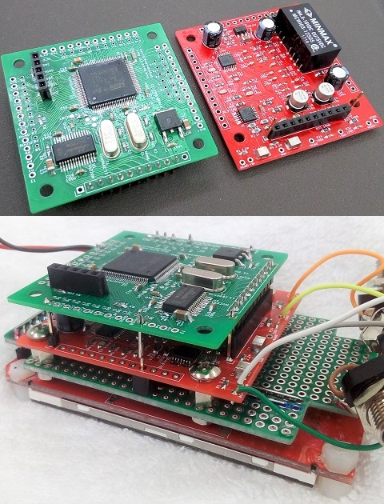
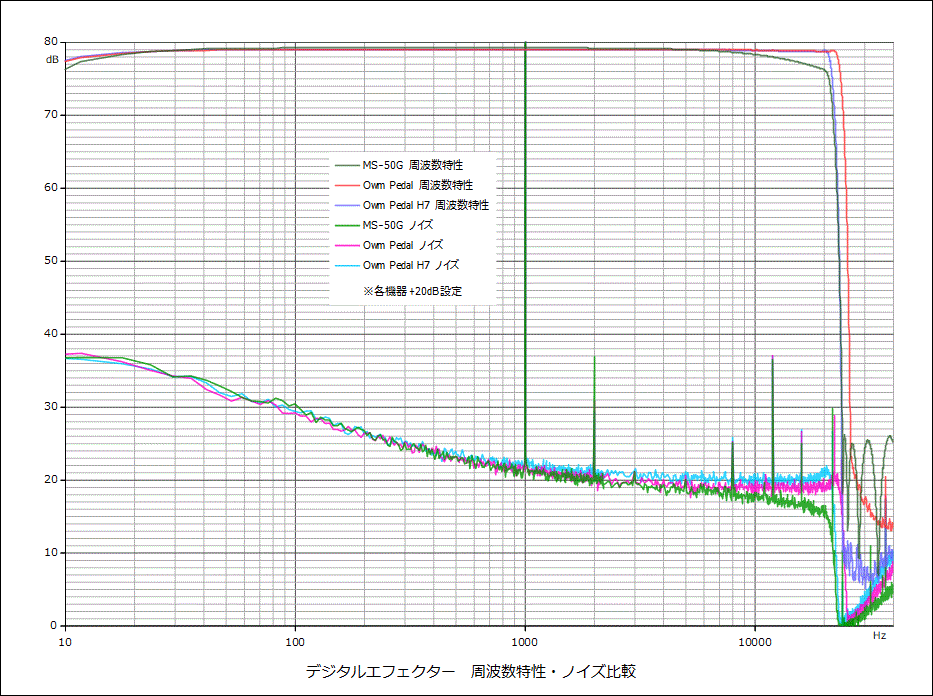

Owm Pedal H7 ハードウェア編
2020年01月23日 カテゴリー：STM32

STM32F405を搭載した「Owm Pedal」に引き続き、STM32H753とタッチパネル付ディスプレイを備えたデジタルエフェクターを製作しました。今回も穴加工はTabby's工房さんにお願いしました。（Owm Pedal H7 ソフトウェア編はこちら）
▽入出力・電源部 回路図

4回路入りオペアンプOPA1679を使用することにしたので、以前と違い入力部のローパスフィルタが2次になっています。デジタル電源は絶縁型DC-DCコンバータで分離するようにしました。コンバータなしにもできるようにしましたが、ノイズ面でよくないと思われるので非推奨です。
▽マイコン・オーディオコーデック部 回路図

当初はSTM32F722を使っていたのですが、さらなる発展を見据えSTM32H7を使うことにしました。注文時の在庫の関係でSTM32H753にしましたが、STM32H743でも問題ないと思います。今回はオーディオサンプリングレート44.1kHzで、SAIペリフェラルを使います。
▽基板レイアウトについて（KiCadデータはGitHubへ）
上側のマイコン基板は4層にしてみました。JLCPCBの場合、50mm×50mm以内であれば4層でも13ドルで済みます。マイコンは可能な限りピンを引き出していますが、全部は使わないので内側は小さいパッドです。GNDは基本一面プレーンで、基板が2枚に分かれているのでコネクタ部分でGNDを接続することになります。DC-DCコンバータは高さを低くするため寝かせて配置しました。
▽ディスプレイ・スイッチ基板レイアウト

念のためダンピング抵抗を入れています。消費電流がそれなりにあるので、マイコン用とは別に3.3Vを準備しました。ディスプレイの詳細は以前の記事（STM32 SPI接続タッチパネル付ディスプレイを使う）をご参照ください。下写真のように基板を合体させます。

▽周波数特性・ノイズ
ZOOM MS-50Gと特性を比較しました。MS-50GはParaEQを6個並べて+20dBになるよう調節しています。ノイズは1kHz正弦波入力時のものです。

Owm PedalはMS-50Gより高域のノイズが多いように見えますが、MS-50Gはもともと高域が下がっているので、それを加味するとほぼ同じノイズレベルといってよいと思います。Owm Pedal H7では1dB程度ノイズが多いですが原因はよくわかりません。基板設計としては、部品配置に注意すればOwm PedalのようにGNDを1面プレーンにしても問題ないとわかりました。入出力のフィルタも、簡単な1次ローパスフィルタで充分かもしれません。